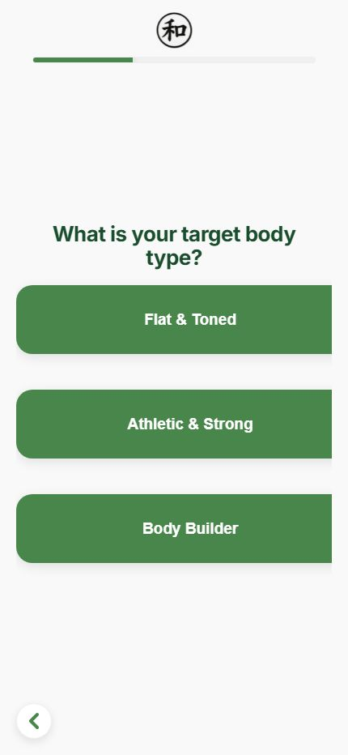
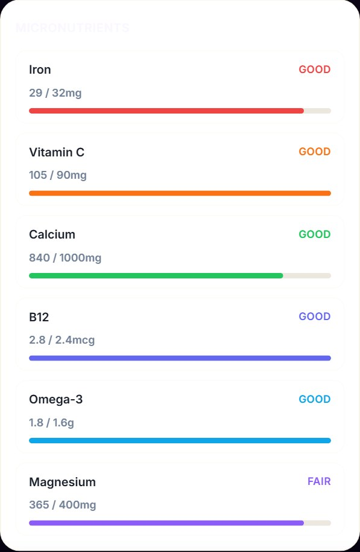
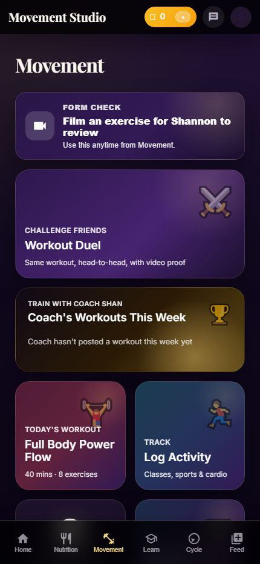
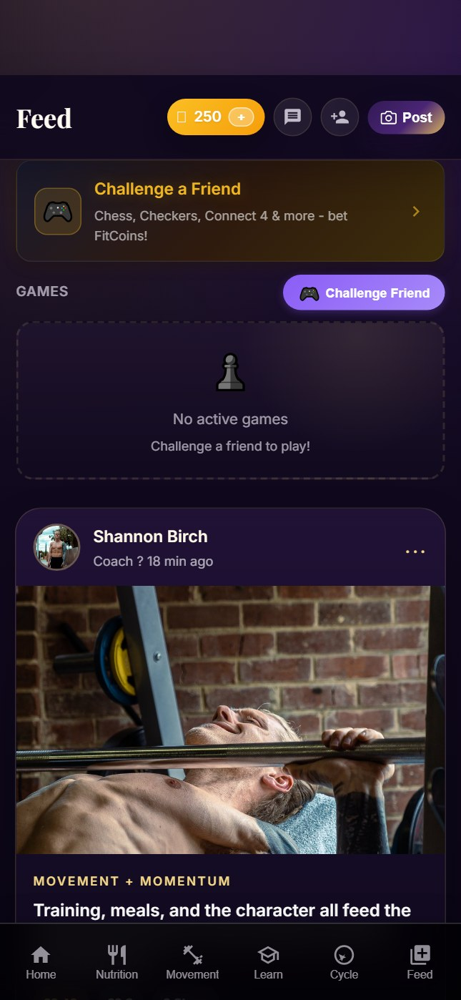

Ask Balance
The fastest way to move around the app. Open it when you want the next step, not more menus.
- Log food or open the camera straight away.
- Start a workout or open a quiz in seconds.
- Jump to the right screen without hunting for it.
Built as a personal tool and a simple game to make fitness feel more motivating, more fun, and easier to stick with.
Ask Balance gets you moving quickly. Nutrition keeps the numbers clear. Movement keeps training structured. Learn explains the why. Feed keeps the community alive. The character makes the progress feel real.
The app is built so the important pieces all sit together. You can log, learn, train, post, and level up without bouncing between a dozen different places.
Quick log tools for meals, snacks, and check-ins keep the day clear without extra tapping.
This is the kind of quick check-in that makes the nutrition side feel simple, fast, and actually usable on a busy day.
Calories, macros, and micronutrients stay in one quick snapshot so you can check what is left before the next meal.
The fastest way to move around the app. Open it when you want the next step, not more menus.
The training tab keeps the workout side organised without losing the coaching feel.
Short lessons that make the why easier to remember and the habits easier to repeat.
The social layer that keeps wins visible and makes the journey feel shared.
The game layer turns consistency into something you can actually see.
These are the actual screens the app is built around, from the quiz and nutrition view through to Movement, Feed, and the character that keeps progress visible.
The character makes the progress loop visible. You can see the streak, the level, and the next bit of momentum without digging for it.

The setup stays simple and direct, so the user gets moving instead of getting stuck in a long intake flow.

Iron, Vitamin C, Calcium, B12, Omega-3, and Magnesium all sit in one clean view so the day stays easy to read.

The workout tab keeps the training side alive with the coach's weekly workouts, form checks, and the stuff that makes each session feel guided.

The feed keeps the wins visible, gives the challenge some social proof, and makes the app feel alive between check-ins.
I wanted one place where the plan, the training, the learning, and the social proof all live together.
That is why the app, the free challenge, and the coaching all sit together.